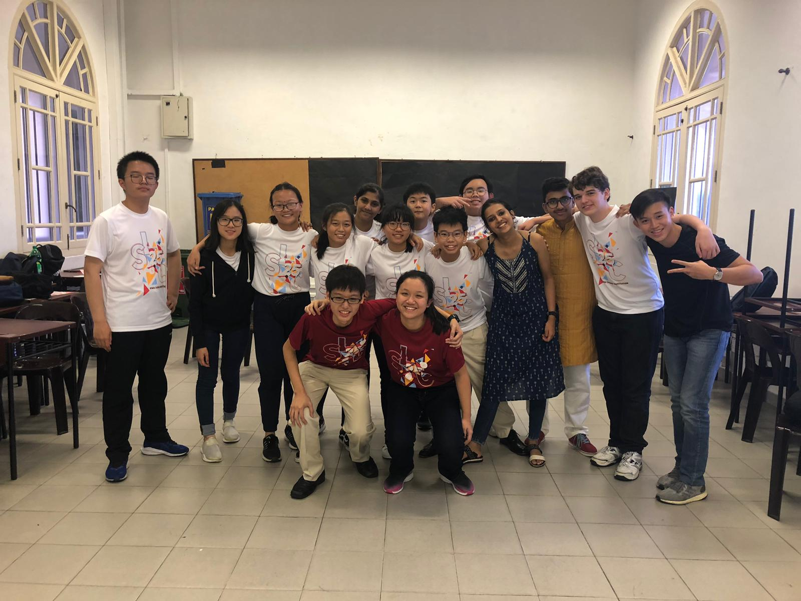

Youth Faculty 8: Negligence of Non-Academic Education
Under Youth Assembly 3: Holistic Education
Hiya! We are YF8 and our issue was the negligence of non-academic education. Non-academic education is the subjects like sports or music, while academic education is maths/science/English. However in certain areas of the world there is a significant negligence, or lack of focus on, these non-acadamias.
The problems that we found were the high cost of living, the education system and students self esteem. The cost of living is high so parents try to force their children to do the academic subjects so that they can get highly paid jobs. For the education system, Universities tend to focus more on academic scores. Finally students lose self esteem if they are not considered 'worthy' in the public eye.
Our solutions are: Equal focus on non-acadamias and academia. More acknowledgement of non-academic achievements. And an increased awareness of these academics.
The Lens
This here is our Lens video, we used it to explain how focusing on non-academic education is not exactly beneficial. We all hope you enjoy watching our amazing acting.
Exhibition
Our exhibition was about trying to explain the causes, effects and solutions to negligence of non-acadamias. We also unintentionally placed a focus on our quiz to see how 'Darrius' (how academically inclined) you were.
(here we would include your exhibition boards, hopefully you left it in ops room)
THANK YOU ALL FOR THIS
I really do thank everyone who helped to pull this entire conference off. You made something truly amazing and let people from all over the world form amazing and lasting relationships. Thank you.